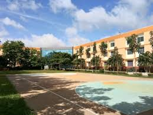

Sai Vidya Institute of Technology (SVIT) is a well-established engineering college located in Bangalore, Karnataka. It was founded in 2008 and is affiliated with Visvesvaraya Technological University (VTU), Belagavi. The college is recognized by the All India Council for Technical Education (AICTE) and offers a wide range of undergraduate and postgraduate courses in engineering and technology. SVIT offers programs in various branches of engineering, including Computer Science, Civil, Mechanical, Electronics and Communication, Electrical and Electronics, and Information Science. The college aims to provide quality education by fostering an environment of innovation, creativity, and practical knowledge. The campus is equipped with modern infrastructure, including well-equipped laboratories, a library, hostels, sports facilities, and a computer center. SVIT also emphasizes research and development, with students encouraged to engage in projects and internships that align with industry trends. The college has a strong placement record, with students getting opportunities in reputed companies across various sectors. In addition to academics, SVIT encourages students to participate in extracurricular activities, including technical fests, cultural events, and sports competitions, promoting overall development.